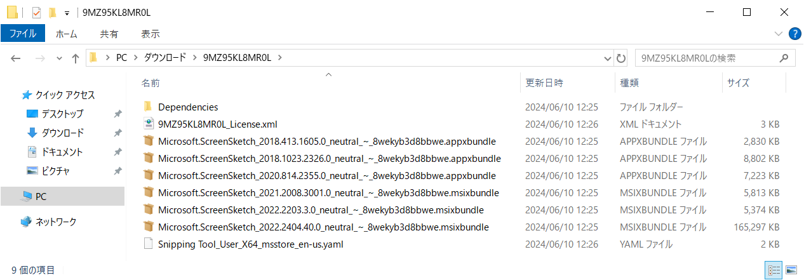

※ 本記事はマイクロソフト社員によって公開されております。
こんにちは。Windows プラットフォーム サポート担当の丸山です。
今回は、winget download コマンドを用いた Microsoft Store アプリのオフライン パッケージのダウンロードについて、ご紹介いたします。※ プレビュー版にて使用可能であった機能が正式版となりましたので、内容を一部変更させていただきました。
概要
Windows 10 や Windows 11 では、OS 標準搭載の INBOX アプリを含め、様々なアプリケーションが Microsoft Store からダウンロードされるパッケージとして提供されております。
Microsoft Store で提供されておりますこれらのパッケージは、Windows Update による月次の更新プログラムには含まれておりませんので、インターネットに接続されていない環境でこれらのパッケージの更新を行うためには、オフライン適用のためのパッケージを入手する必要がございました。
弊社では、従来より、ビジネス向け Microsoft Store を用いたオフライン パッケージの入手方法をご紹介しておりましたが、ビジネス向け Microsoft Store のサービス終了に伴い、winget download コマンドを用いることで Microsoft Store パッケージのダウンロードが可能となりましたので、本 BLOG にてその手順をご紹介したいと思います。
参考情報 https://jpwinsup.github.io/blog/2020/10/19/UserInterfaceAndApps/MicrosoftStore/DownloadOfflinePackage/
参考情報 https://learn.microsoft.com/ja-jp/windows/package-manager/winget/download
winget download コマンドのご紹介
winget コマンドのバージョンが 1.8.1911 以降に更新されている環境では、winget download コマンドを以下のように実行いただくことで、Microsot Store アプリのオフライン パッケージをダウンロードできます。
1 | winget download <PackageID> |
※ Microsoft Store パッケージのダウンロードには、Microsoft Entra ID の認証が必要です。必要に応じて認証のプロンプトが表示されます。Microsoft アカウントなどのコンシューマー アカウントは利用できません。また、License.xml の入手にあたりましては、Microsoft Entra ID テナントへの管理者アクセス権が必要になります。パッケージをプロビジョニング領域にインストールする場合には License.xml が必要になります。
※ License.xml は再配布が出来ません。ライセンスを取得した組織外でのご利用につきましてはライセンス違反となりますので、ご注意ください。
※ プレビュー版ではインターネットに接続されている PC に Microsoft.DesktopAppInstaller のプレビュー版のパッケージをインストールする必要がございましたが、正式版となりました現在におきましては、プレビュー版のパッケージ導入は不要となりました。Windows Server OS や、LTSC 版など、Microsoft.DesktopAppInstaller のパッケージが標準搭載されていない環境では、後述の手順にて Microsoft.DesktopAppInstaller のパッケージを導入することで、winget download コマンドが利用可能となります。
実行例:
1 | C:\>winget download 9MZ95KL8MR0L |
手順通りに実施されました場合、Downloads フォルダー配下の <PackageID> 配下に、各種パッケージとライセンスファイルがダウンロードされますので、こちらのファイルをオフライン パッケージとしてお使いください。

winget コマンドのバージョン確認方法
winget コマンドのバージョンは、winget -v コマンドで確認可能でございます。
実行例:
1 | C:\>winget -v |
Microsoft.DesktopAppInstaller のパッケージがない場合
LTSB 版、および LTSC 版の Windows、あるいは Windows Server OS など、winget コマンドを標準搭載していない環境では、インターネットに接続されている PC にて Microsoft.DesktopAppInstaller のパッケージをダウンロードしてインストールすることで、winget コマンドが使用できるようになります。
本 BLOG 記事執筆の時点では、Microsoft.DesktopAppInstaller のバージョン 1.8.1911 が最新版として公開されておりましたので、こちらのバージョンをダウンロードする手順にてご紹介いたします。
インターネットに接続された端末にて以下の URL にアクセスし、Microsoft.DesktopAppInstaller のパッケージを入手します。
https://github.com/microsoft/winget-cli/releases/download/v1.8.1911/Microsoft.DesktopAppInstaller_8wekyb3d8bbwe.msixbundlePowerShell 経由にて以下のコマンドを実行し、Microsoft.DesktopAppInstaller のパッケージをインストールします。
1
Add-AppxPackage Microsoft.DesktopAppInstaller_8wekyb3d8bbwe.msixbundle
※コマンドを実行するフォルダーに Microsoft.DesktopAppInstaller_8wekyb3d8bbwe.msixbundle を配置するか、ファイル名を相対パス、あるいはフルパスで入力してください。
※フレームワークの不足によるインストールのエラーが表示される場合
以下のように、フレームワークの不足によるインストールのエラーが表示されました場合、別途フレームワークの導入が必要です。
1 | PS C:\> Add-AppxPackage .\Microsoft.DesktopAppInstaller_8wekyb3d8bbwe.msixbundle |
フレームワークの不足によるインストールのエラーが表示されました場合には、以下の手順を実施してから、Microsoft.DesktopAppInstaller のインストールをやり直してください。
以下の URL にアクセスして、Microsoft.VCLibs.x64.14.00.Desktop.appx を入手します。
https://aka.ms/Microsoft.VCLibs.x64.14.00.Desktop.appxPowerShell から以下のコマンドを実行し、Microsoft.VCLibs.x64.14.00.Desktop.appx をインストールします。
Add-AppxPackage Microsoft.VCLibs.x64.14.00.Desktop.appx -ForceApplicationShutdown以下の URL にアクセスして、Microsoft.UI.Xaml.2.8.x64.appx を入手します。
https://github.com/microsoft/microsoft-ui-xaml/releases/download/v2.8.6/Microsoft.UI.Xaml.2.8.x64.appxPowerShell から以下のコマンドを実行し、Microsoft.UI.Xaml.2.8.x64.appx をインストールします。
Add-AppxPackage Microsoft.UI.Xaml.2.8.x64.appx -ForceApplicationShutdown
更新履歴
- 2024/06/10 : 本 Blog の公開
- 2024/08/15 : 正式版公開に伴い、内容を修正しました